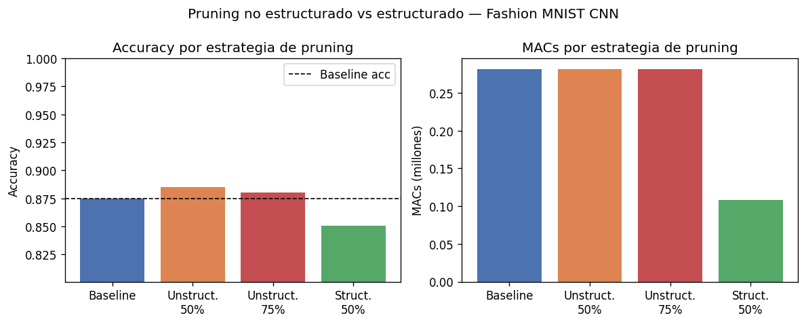
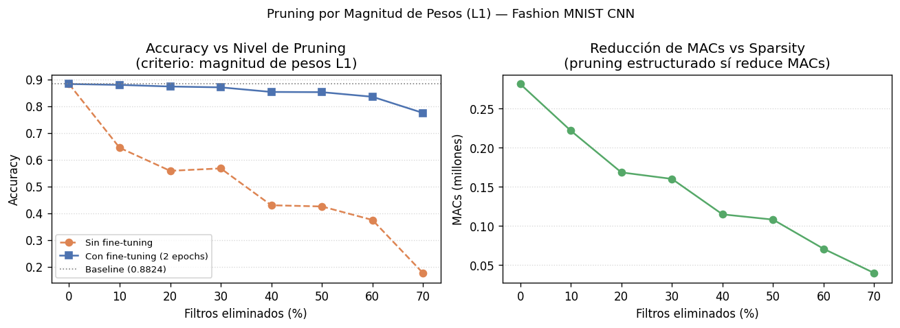
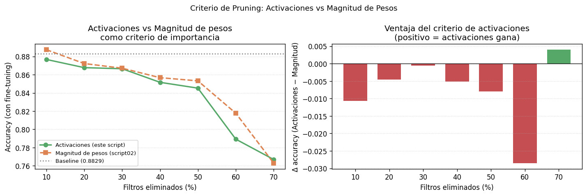

Ejemplo: no estructurado vs estructurado
Output de script01.py
Cargando...Eliminando las conexiones redundantes de la red
Si NAS es encontrar los planos perfectos para construir una casa, Pruning es tomar una casa ya construida, y quitarle los muros no estructurales sin que se derrumbe.
La máscara binaria
Las redes modernas están sobreparametrizadas. Un peso cercano a cero tiene impacto mínimo.
Wpruned = W ⊙ M
El desafío es qué forma tiene M: pesos individuales, canales, bloques…
¿Qué podamos? ¿Hojas individuales, o ramas y troncos enteros?
Ceros dispersos → matriz irregular
Filas/canales eliminados → matriz densa más pequeña
Exactamente 2 de cada 4 son cero
Mandan las GPUs y Tensor Cores.
Mandan los MCU y NPUs.
examples/pruning/script01.py — entrena CNN en Fashion MNIST y
compara las estrategias. Mensaje clave: la sparsidad no estructurada no reduce los
MACs.
Estrategias comparadas
Qué se mide
Unstruct-75% → MACs idénticos al
baseline.
Struct-50% → MACs genuinamente menores.
Cargando...
examples/pruning/script02.py — pruning estructurado usando la
norma L1 de cada filtro como criterio de importancia.
Criterio: norma L1 por filtro
importancia(f) = ‖Wf‖₁ = Σ|wi|
Se eliminan los filtros con menor magnitud acumulada. Simple, sin datos de calibración.
Importancia de filtros (L1)
umbral de sparsity
Cargando...
examples/pruning/script03.py — usa la activación media de
cada filtro sobre un batch de calibración como criterio. Muestra que activa ≻ magnitud.
Criterio: activación media por filtro
importancia(f) = Ex[‖Af(x)‖₁]
Pasa un batch de calibración y mide cuánto activa realmente cada filtro durante la inferencia.
¿Por qué es mejor?
Peso ≠ activación
f₂ y f₃ son casos donde los criterios discrepan — y la activación acierta más.
Cargando...